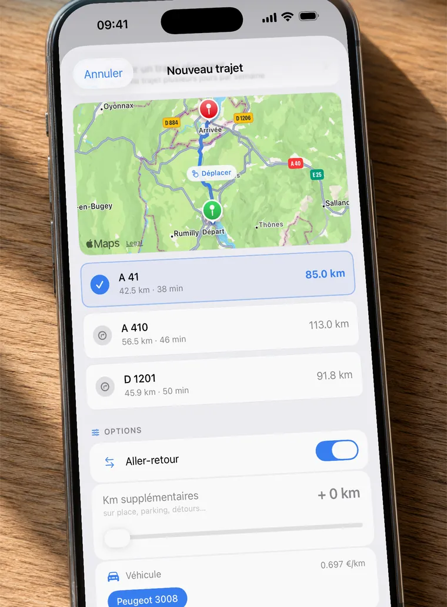

Barème fiscal
Barème kilométrique 2026
Le barème kilométrique sert à calculer les indemnités kilométriques d’un véhicule personnel utilisé pour le travail. Pour 2026, il est reconduit à l’identique de 2025 : les montants ci-dessous sont ceux à appliquer.

Simulateur de frais kilométriques 2026
Indiquez la puissance fiscale de votre véhicule et vos kilomètres professionnels de l’année, le montant se calcule immédiatement.
Estimation pour 2026
—
Estimation calculée avec le barème officiel détaillé ci-dessous, à titre indicatif.
Tranche 1 — jusqu’à 5 000 km par an
| Puissance fiscale | Thermique / hybride | 100 % électrique |
|---|---|---|
| 3 CV et moins | 0,529 € | 0,635 € |
| 4 CV | 0,606 € | 0,727 € |
| 5 CV | 0,636 € | 0,763 € |
| 6 CV | 0,665 € | 0,798 € |
| 7 CV et plus | 0,697 € | 0,836 € |
Exemple : 3 000 km parcourus avec une 5 CV thermique donnent 3 000 × 0,636 = 1 908 €.
Tranche 2 — de 5 001 à 20 000 km par an
Dans cette tranche, le calcul n’est pas un simple taux au kilomètre : on multiplie la distance par un coefficient, puis on ajoute un montant fixe. (d = distance parcourue dans l’année)
| Puissance fiscale | Thermique / hybride | 100 % électrique |
|---|---|---|
| 3 CV et moins | (d × 0,316) + 1 065 | (d × 0,379) + 1 278 |
| 4 CV | (d × 0,340) + 1 330 | (d × 0,408) + 1 596 |
| 5 CV | (d × 0,357) + 1 395 | (d × 0,428) + 1 674 |
| 6 CV | (d × 0,374) + 1 457 | (d × 0,449) + 1 748 |
| 7 CV et plus | (d × 0,394) + 1 515 | (d × 0,473) + 1 818 |
Exemple : 12 000 km avec une 5 CV thermique donnent (12 000 × 0,357) + 1 395 = 5 679 €.
Tranche 3 — au-delà de 20 000 km par an
| Puissance fiscale | Thermique / hybride | 100 % électrique |
|---|---|---|
| 3 CV et moins | 0,370 € | 0,444 € |
| 4 CV | 0,407 € | 0,488 € |
| 5 CV | 0,427 € | 0,512 € |
| 6 CV | 0,447 € | 0,536 € |
| 7 CV et plus | 0,470 € | 0,564 € |
Véhicules électriques : majoration de 20 %
Pour un véhicule 100 % électrique, le montant obtenu est majoré de 20 %. Les colonnes « 100 % électrique » des tableaux ci-dessus appliquent déjà cette majoration.
Qui peut utiliser ce barème ?
Il s’applique aux personnes qui utilisent leur véhicule personnel pour leur activité professionnelle : indépendants et professions libérales au régime réel, salariés qui optent pour les frais réels, dirigeants remboursés par leur société, et salariés indemnisés par leur employeur.
Dans tous les cas, les kilomètres doivent pouvoir être justifiés : date du déplacement, destination, motif professionnel et distance parcourue.
Justifier ses kilomètres sans y passer des soirées
C’est précisément le travail que fait KmPro : l’application enregistre chaque déplacement, calcule la distance et applique ce barème selon votre véhicule, puis exporte le tout en Excel ou en PDF pour votre comptable. Elle peut aussi retrouver vos déplacements dans votre calendrier et remplir une année entière d’un coup.

Source du barème : barème des indemnités kilométriques publié par l’URSSAF. Page mise à jour le 27 septembre 2026. Ces informations sont données à titre indicatif et ne remplacent pas l’avis d’un professionnel de la comptabilité.
À lire aussi
- Trouver le barème fiscal de sa voiture : la puissance fiscale
- Barème kilométrique 2025 : le tableau à appliquer
- Calculer ses frais kilométriques en France : méthode et exemples
- Carnet de bord kilométrique : le tenir sans le remplir à la main
- Comptables : proposez KmPro à vos clients
- Déclarer ses frais kilométriques avec son véhicule personnel
- Indemnités kilométriques 2026 : ce qui change
- Modèle Excel de frais kilométriques : ce qu’il doit contenir
- Note de frais kilométrique : ce qu’elle doit contenir